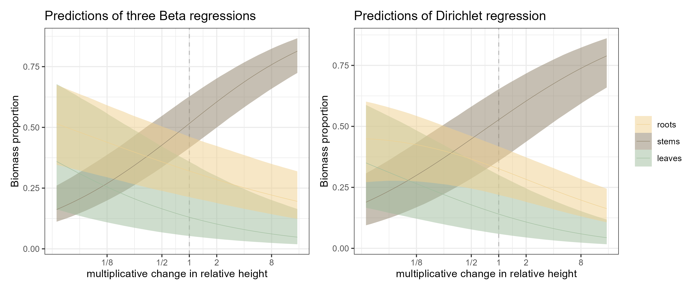
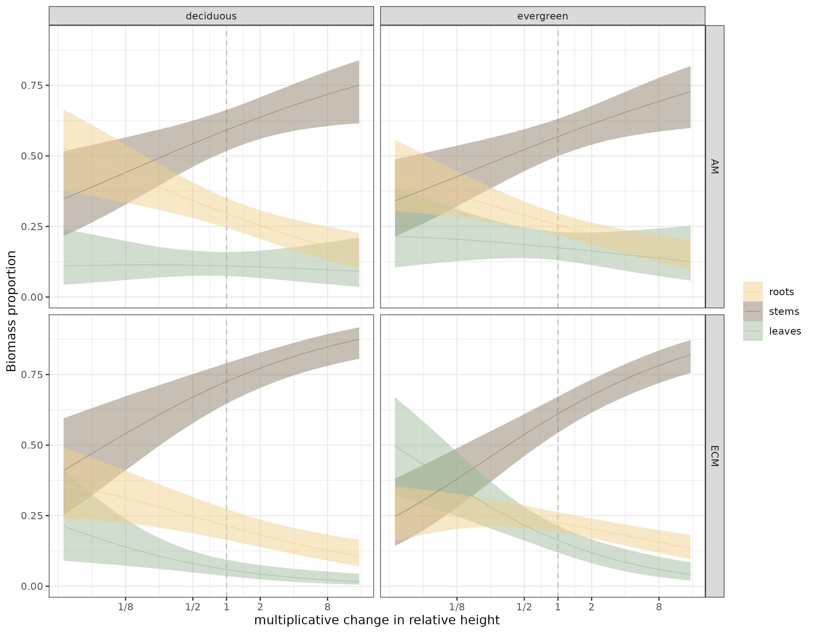
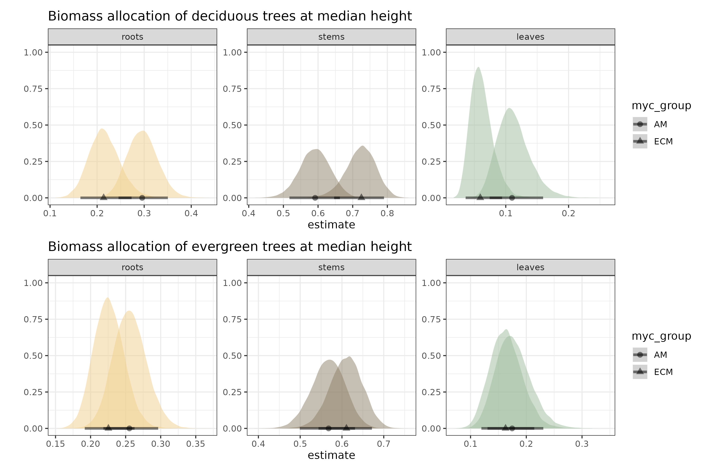
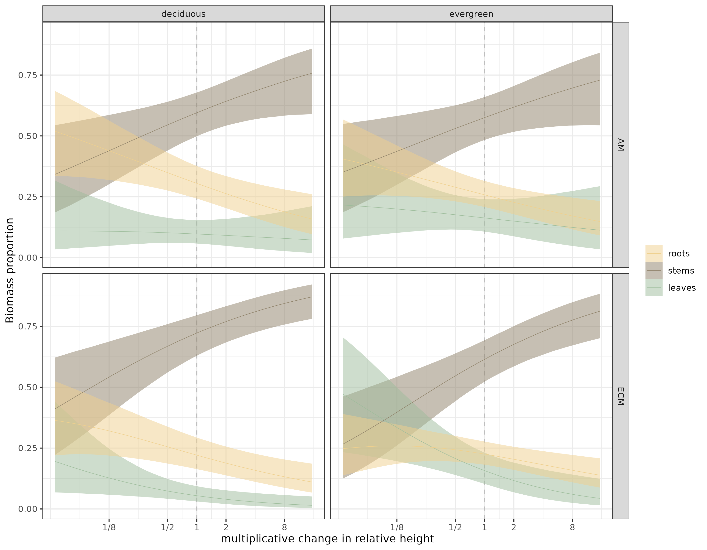
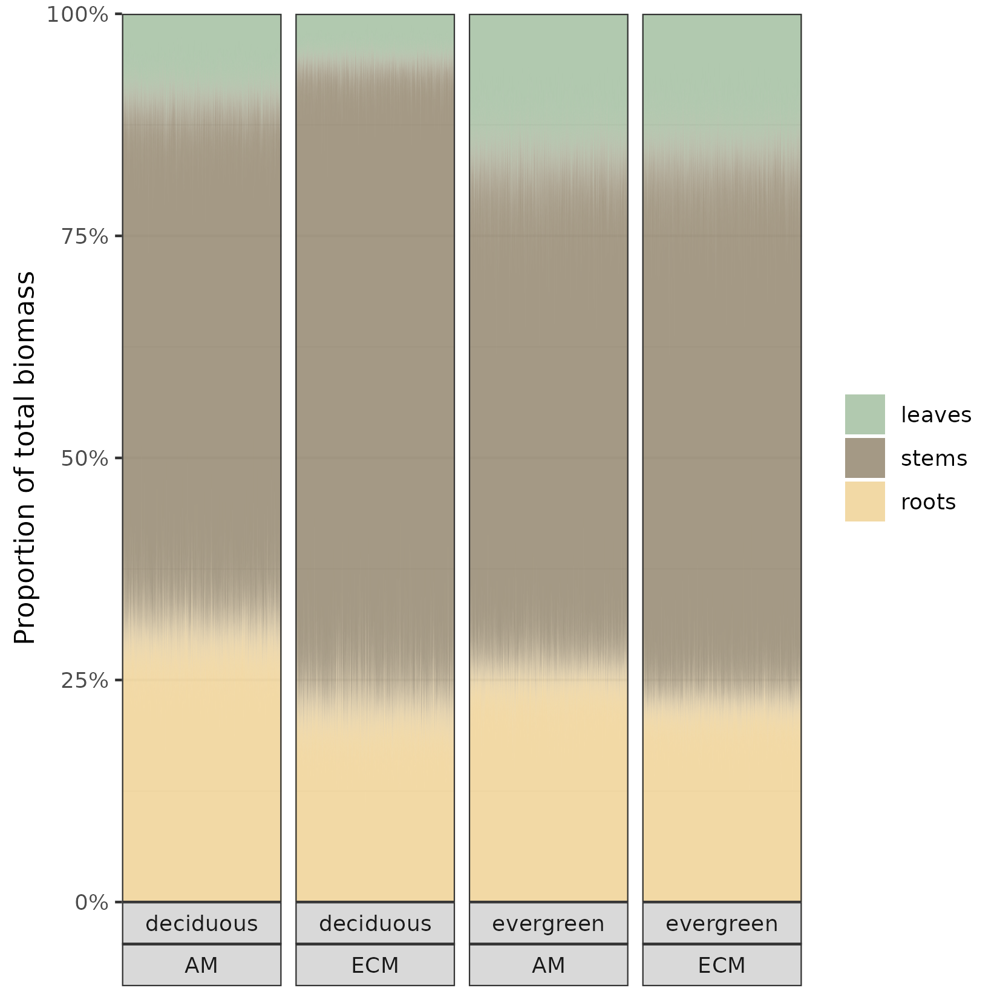

modelling proportions and trying a phylogenetic regression, using data from 10.1002/ecy.3688
proportional data
Dirichlet
phylogenetic regression
Author
Angelos Amyntas
Published
September 7, 2024
the point of this exercise
Jevon and Lang (2022) examined how tree properties like leaf habit (evergreen vs deciduous) and type of mycorrhizal association (arbuscular vs ectomycorrhizal) can influence the relationship between tree size and biomass allocation, across 55 different tree species. Since this post is going to be light on ecology and heavy on stats, you might want to skim peruse their paper first. It’s really good!
My own interest in this data-set is twofold. Examining biomass allocation means that we are looking at proportions; not just the leaf biomass of a tree but the proportion of its total biomass that is leaves. Proportions, which are bound to (0,1), can be analysed using the Beta distribution, so that model estimates respect their bounded nature1. A tree can’t have more than 100% of its biomass in leaves and accordingly, a model using the Beta distribution will not make estimates outside the 0-1 range.
While the Beta distribution allows us to model simple proportions (e.g. proportion of biomass that is leaves vs not leaves), the Dirichlet distribution is an extension of the Beta that can accommodate proportions of more than two components (i.e. proportions of biomass that are leaves, stems and roots)2. On the other hand, working with Dirichlet models is more cumbersome and I am not sure that we get more out of them than fitting three individual Beta models, one for each component. Let’s find out.
The other cool feature of Jevon and Lang (2022) is the phylogenetic tree in (their) Figure 1a, showing the relatedness of the 55 species of their study. The authors did use multilevel models to acount for observations clustered within studies and species but they did not make use of the phylogenetic tree in their analysis. We are going to try and use that information to account for the non-independence of related tree species. We are in luck, because {brms} supports this.
The authors of the original paper have made all their code available here. They’ve also written a very clear Methods section, outlining every choice they made in the selection of the data, which are coming from the Biomass and Allometry Database3. I have largely retraced their wrangling steps, with minor adjustments4.
caveat lector
I am not a forest ecologist. I have not spent nearly as much time5 thinking about the processes explored here, as the authors of the original study, nor can I match their expertise on the subject. The motivation behind this is not to question nor affirm the original study. The authors fitted an ecologically motivated model, which they then simplified aiming for parsimony. I am mainly interested in the technicalities of modelling proportions and accounting for phylogenetic relatedness. I will therefore start from the ground up, adding complexity, to see how far I get before I run into trouble. Again, the focus here is on model fitting, not ecology. But I am also, very emphatically, not a statistician. I have tried to explicitly justify every choice I have made and I would like to believe that my choices are sensible. But if you read this and you spot any mistakes, I would be grateful if you point them out to me.
baby steps
if you’d like to play along, the script is available here.
Let’s start simple, by examining the effect of tree height on root, stem6 and leaf (relative) mass for a single species, Betula alleghaniensis. It’s a good place to start because it is the species with the largest number of individuals in the data (295 trees, unevenly distributed across three locations). Median height is 1.59 m with a range of 0.5-24.42 m. It’s worth keeping in mind that within-species variation in height and biomass allocation does not only depend on ontogeny but also influenced by the environment (e.g. competition with neighbouring trees, climate).
Before any model fitting, we are going to standardize our predictor, height; let’s divide the height of each B. alleghaniensis individual by the median height of that species and then take the base 2 logarithm of that quantity. The first of these steps brings individuals of median height at 1. The second step pushes them at 0 (log2(1) = 0) so that the intercepts, the model’s estimates at 0, will be the estimated proportions for a median individual of B. alleghaniensisand now a one-unit change (which is what the coefficient for the predictor corresponds to) amounts to a doubling of height. I’ll do this for all species, not just the focal one.
Show the code
within.sp = full_df_mod %>%rename(roots = RmTm,stems = SmTm,leaves = LmTm) %>%# this is how brms expects the response for Dirichlet models mutate(RSL =cbind(roots = .$roots,stems = .$stems,leaves = .$leaves)) %>%group_by(SppName) %>%mutate(.after = h.t,ht.median =median(h.t),rel.ht =log2(h.t/ht.median),N =n()) %>%ungroup()
Now we will first fit three Beta regression models, each one estimating the effect of relative height on the proportion of an individual’s total biomass that is roots, stems or leaves. We will let the intercept vary by study. Then we will estimate the same relationships but this time, fitting one model for all three proportions7.
library(brms)library(tidybayes)library(modelr)# one model for rootsm.Bet_alle.r <-brm(bf(roots ~ rel.ht + (1|Study)), data = within.sp %>%filter(SppName =="Betula_alleghaniensis"), family =Beta(), chains =4, iter =6000, warmup =3000, cores =4, control =list(adapt_delta =0.99),backend ="cmdstanr",file ="fits/m.Bet_alle.r",seed =123)pp_check(m.Bet_alle.r, ndraws =200)# one model for stemsm.Bet_alle.s <-brm(bf(stems ~ rel.ht + (1|Study)), data = within.sp %>%filter(SppName =="Betula_alleghaniensis"), family =Beta(), chains =4, iter =6000, warmup =3000, cores =4, control =list(adapt_delta =0.99,max_treedepth =12),backend ="cmdstanr",file ="fits/m.Bet_alle.s",seed =123)pp_check(m.Bet_alle.s, ndraws =200)# one model for leavesm.Bet_alle.l <-brm(bf(leaves ~ rel.ht + (1|Study)), data = within.sp %>%filter(SppName =="Betula_alleghaniensis"), family =Beta(), chains =4, iter =6000, warmup =3000, cores =4, control =list(adapt_delta =0.99,max_treedepth =12),backend ="cmdstanr",file ="fits/m.Bet_alle.l",seed =123)pp_check(m.Bet_alle.l, ndraws =200)# all in onem.Bet_alle.rsl <-brm(bf(RSL ~ rel.ht + (1|Study)), data = within.sp %>%filter(SppName =="Betula_alleghaniensis"), family =dirichlet(), chains =4, iter =9000, warmup =3000, cores =4, control =list(adapt_delta =0.99,max_treedepth =12),backend ="cmdstanr",file ="fits/m.Bet_alle.rsl",seed =123)# Total execution time: 751.3 seconds.pp_check(m.Bet_alle.rsl, ndraws =100)# Error: 'pp_check' is not implemented for this family.
First sign of “trouble”; we cannot use pp_check() for a Dirichlet regression, to assess how well the model captures the distribution of the data. We can make density overlay plots from scratch though:
library(bayesplot)# generate predictionsyrep <-posterior_predict(m.Bet_alle.rsl, ndraws =200)# yrep is a three dimensional array:# 200 predictions x 295 observations x 3 response componentsdim(yrep)# here's one slice:yrep[1, 1, 1:3]# roots stems leaves # 0.3791285 0.4160540 0.2048174# three custom-made density overlay plots, similar to the default pp_check() outputppc_dens_overlay(within.sp$roots[within.sp$SppName =="Betula_alleghaniensis"], yrep[ , 1:295, 1])ppc_dens_overlay(within.sp$stems[within.sp$SppName =="Betula_alleghaniensis"], yrep[ , 1:295, 2])ppc_dens_overlay(within.sp$leaves[within.sp$SppName =="Betula_alleghaniensis"], yrep[ , 1:295, 3])
And now we can compare the estimates of the two approaches. To make it easier to see any differences, I have combined the draws from the three Beta models before pushing them through {ggplot}, so that we can have one plot for the three Betas (left) and one for the Dirichlet regression (right):
Show the code
root = within.sp %>%data_grid(rel.ht =seq_range(rel.ht, n =51)) %>%add_epred_draws(m.Bet_alle.r, re_formula =NA) %>%add_column(.category ="roots")stem = within.sp %>%data_grid(rel.ht =seq_range(rel.ht, n =51)) %>%add_epred_draws(m.Bet_alle.s, re_formula =NA) %>%add_column(.category ="stems")leaf = within.sp %>%data_grid(rel.ht =seq_range(rel.ht, n =51)) %>%add_epred_draws(m.Bet_alle.l, re_formula =NA) %>%add_column(.category ="leaves")rsl =rbind(root,stem,leaf)rsl$.category =factor(rsl$.category, levels =c("roots","stems","leaves"))fig1a = rsl %>%ggplot(aes(x = rel.ht, y = .epred, color = .category,fill = .category)) +geom_vline(xintercept =0, linetype ="dashed", color ="grey") +stat_lineribbon(aes(y = .epred), .width =c(0.9),point_interval ="median_qi",linewidth = .2)+scale_x_continuous(breaks =c(-3,-1,0,1,3), labels =c("1/8","1/2",1,2,8)) +scale_color_manual(values =c("#efd08e","#8d8067","#9dbc9b")) +scale_fill_manual(values =c("#efd08e80","#8d806780","#9dbc9b80")) +ylab("Biomass proportion") +xlab("multiplicative change in relative height") +theme_bw() +theme(legend.position ="none") +ggtitle("Predictions of three Beta regressions")fig1b = within.sp %>%data_grid(rel.ht =seq_range(rel.ht, n =51)) %>%add_epred_draws(m.Bet_alle.rsl, re_formula =NA) %>%ggplot(aes(x = rel.ht, y = .epred, color = .category,fill = .category)) +geom_vline(xintercept =0, linetype ="dashed", color ="grey") +stat_lineribbon(aes(y = .epred), .width =c(0.9),point_interval ="median_qi",linewidth = .2)+scale_x_continuous(breaks =c(-3,-1,0,1,3), labels =c("1/8","1/2",1,2,8)) +scale_color_manual(values =c("#efd08e","#8d8067","#9dbc9b")) +scale_fill_manual(values =c("#efd08e80","#8d806780","#9dbc9b80")) +ylab("Biomass proportion") +xlab("multiplicative change in relative height") +theme_bw() +theme(legend.title =element_blank()) +ggtitle("Predictions of Dirichlet regression")library(patchwork)fig1 = fig1a+fig1bggsave("figs/fig1.png", fig1, units ="mm",width =180,height =75,scale =1.4)

Figure 1: Model estimates with the two different approaches. Thin lines are the median estimates, bound by 90% credible envelopes.
They are not alarmingly different but you can see the wider uncertainty for the stem proportion across the height gradient and the change in the shape of the root-height relationship. The big picture is the same though and at this point, while we are only looking at one species and not yet asking how leaf habit or mycorrhizal association can modify this relationship, these differences are inconsequential.
So taller trees allocate increasingly more biomass to stems, relative to roots or leaves. An individual of median height is already around 50% stem, while leaves are the smallest proportion. (Probably not news to anyone studying tree allometry; I wouldn’t know).
all together now
Getting cocky, we are now going to throw the full dataset into the Dirichlet model. We now have 55 species with different leaf habits and mycorrhizal associations. Biomass allocation, as well as its relationship to height, may be influenced by these factors. I will cut a few corners here8, going directly to a model that includes relative height, habit and mycorrhizal group as well as their two-way interactions as predictors. We have a fairly sparse dataset with species information coming from more than one study/location while studies/locations feature more than one species. This sounds like a case for crossed random effects; we will account for the clustering of observations within species and within studies. We are also going to let the effect of height vary by species. Remember that we are still looking at within species height variation, with species’ median height as our baseline. We’re just partially pooling information across species about the effects of within-species height variation on biomass allocation.
m.all.rsl_hhm2 <-brm(bf(RSL ~ (rel.ht + leaf_habit + myc_group)^2+ (1+ rel.ht|SppName) + (1|Study)), data = within.sp, family =dirichlet(), chains =4, iter =9000, warmup =3000, cores =4, control =list(adapt_delta =0.99,max_treedepth =12),backend ="cmdstanr",file ="fits/m.all.rsl_hhm2",seed =123)# Total execution time: 4191.0 seconds.
We have now ramped up both the number of observations and, more importantly, the number of coefficients to be estimated. This model took a while to get there.

Figure 2: Estimates of the Dirichlet model for all species, faceted by leaf habit and mycorrhizal association. Thin lines are the median estimates, bound by 90% credible envelopes.
What stood out to me first, by eyeballing figure 2, is that ECM-associated trees seem to have a more pronounced stem to leaf biomass trade-off, especially above median height.
Here are the model estimates at median height for the two leaf habits and mycorrhizal associations.
Show the code
fig3a = within.sp %>%data_grid(expand_grid(rel.ht =c(0),leaf_habit =c("deciduous"),myc_group =c("ECM","AM"))) %>%add_epred_draws(m.all.rsl_hhm2,re_formula =NA) %>%mutate(group =str_c(.category, myc_group)) %>%ggplot(aes(x = .epred, fill =factor(group))) +stat_halfeye(aes(shape = myc_group),.width =c(.9),size =5,alpha = .5) +scale_fill_manual(values =c("#9dbc9b","#9dbc9b","#efd08e","#efd08e","#8d8067","#8d8067"),guide ="none") +ylab("") +xlab("estimate") +facet_wrap(~.category,scales ="free") +theme_bw() +ggtitle("Biomass allocation of deciduous trees at median height")fig3b = within.sp %>%data_grid(expand_grid(rel.ht =c(0),leaf_habit =c("evergreen"),myc_group =c("ECM","AM"))) %>%add_epred_draws(m.all.rsl_hhm2,re_formula =NA) %>%mutate(group =str_c(.category, myc_group)) %>%ggplot(aes(x = .epred, fill =factor(group))) +stat_halfeye(aes(shape = myc_group),.width =c(.9),size =5,alpha = .5) +scale_fill_manual(values =c("#9dbc9b","#9dbc9b","#efd08e","#efd08e","#8d8067","#8d8067"),guide ="none") +ylab("") +xlab("estimate") +facet_wrap(~.category,scales ="free") +theme_bw() +ggtitle("Biomass allocation of evergreen trees at median height")fig3 = fig3a/fig3bggsave("figs/fig3.png", fig3, units ="mm",width =180,height =120,scale =1.4)

Figure 3: Estimated proportions at median height. Points are the median estimate bound by 90% credible intervals. Note that each facet has its own scale for the x axis. The y axis is not informative; I forgot to remove it.
the other kind of tree
Finally, we can take our already complex multivariate, multivariable , varying intercepts, varying slopes regression model and have the intercepts and height slopes further constrained by phylogeny. This means that when we are partially pooling information across species, the extent of pooling depends on how closely related the different species are. You can read more about phylogenetic multilevel models with {brms} here. Getting the data set-up right was a process of trial and error, but {brms} throws fairly informative errors. We need:
a phylogenetic tree (provided by Jevon and Lang (2022)) to construct the variance-covariance matrix,
a grouping variable (phylo) telling us which node of the tree each observation belongs to, but this needs to be distinct from our species variable (SppName) even though they (must) contain the same information,
the names of the vcv matrix need to match the elements of phylo.
Note that we are dealing with a phylogenetic model with repeated measurements within each node/species which is why we need to go through the SppName-phylo matching shenanigans. We’ve also had not just the intercept but also the effect of height on biomass allocation be constrained by phylogeny. This model took a substantial amount of time to finish.
library(ape)# load the treephylo =read.tree("phyliptree1.phy")# phylogenetic variance-covariance matrixA = ape::vcv.phylo(phylo)# replaces "name" with namedimnames(A) =list(unique(within.sp$SppName),unique(within.sp$SppName))# grouping of observations by species (brms requires a distinct named variable)within.sp$phylo = within.sp$SppNamem.all.rsl_hhm2_h.ph <-brm(bf(RSL ~ (rel.ht + leaf_habit + myc_group)^2+ (1+ rel.ht|gr(phylo, cov = A)) + (1+ rel.ht|SppName) + (1|Study)), data = within.sp, data2 =list(A = A),family =dirichlet(), chains =4, iter =9000, warmup =3000, cores =4, control =list(adapt_delta =0.99,max_treedepth =12),backend ="cmdstanr",file ="fits/m.all.rsl_hhm2_h.ph",seed =123)
And here are the estimates of the phylogenetic model:

Figure 4: Estimates of the phylogenetic model. Thin lines are the median estimates, bound by 90% credible envelopes.
If you compare it with the previous figure, the credible envelopes are chonkier. That’s as it should be; the information we get from each species is not independent from other, related species.
For completeness, here are the estimates of the three-Betas equivalent of the phylogenetic model.
And finally, inspired by this amazing plot, let’s make our own version of figure 2d in Jevon and Lang (2022). We will stick with median height:
Show the code
library(scales)fig5 = within.sp %>%data_grid(rel.ht =c(0),leaf_habit =c("deciduous","evergreen"),myc_group =c("ECM","AM")) %>%add_epred_draws(m.all.rsl_hhm2_h.ph, re_formula =NA) %>%mutate(.category=fct_relevel(.category,c("leaves","stems","roots"))) %>%ggplot(aes(x = .draw, y = .epred)) +geom_area(aes(fill = .category), position =position_stack()) +labs(x =NULL, y ="Proportion of total biomass", fill =NULL) +scale_x_continuous(breaks =NULL, expand =c(0, 0)) +scale_y_continuous(labels =label_percent(), expand =c(0, 0)) +scale_fill_manual(values =c("#9dbc9bcc","#8d8067cc","#efd08ecc")) +facet_wrap(leaf_habit~myc_group, strip.position ="bottom", nrow =1) +theme_bw()ggsave("figs/fig5.png", fig5, units ="mm",width =140,height =140,scale =1)

Figure 5: Biomass allocation for an individual of median height. The fuzzy areas demonstrate the uncertainty for the expected proportions
conclusions
A Dirichlet regression is three\(n\) Beta regressions in a trenchcoat 🤷.
Working with the output of a Dirichlet model, to produce figures or to get estimates at specific values, was more straightforward than I anticipated. As far as I can tell, it is not possible to use {marginaleffects} or {emmeans} to calculate contrasts, for example. But these can be calculated manually from the posterior draws (left as an exercise for the reader 😉).
The phylogenetic model is simple enough to specify but can be computationally prohibitive depending on your processor and RAM.
Trees are interesting 🤔.
references
Douma, Jacob C., and James T. Weedon. 2019. “Analysing Continuous Proportions in Ecology and Evolution: A Practical Introduction to Beta and Dirichlet Regression.” Edited by David Warton. Methods in Ecology and Evolution 10 (9): 1412–30. https://doi.org/10.1111/2041-210X.13234.
Falster, Daniel S., Remko A. Duursma, Masae I. Ishihara, Diego R. Barneche, Richard G. FitzJohn, Angelica Vårhammar, Masahiro Aiba, et al. 2015. “BAAD: A Biomass and Allometry Database for Woody Plants.”Ecology 96 (5): 1445–45. https://doi.org/10.1890/14-1889.1.
Jevon, Fiona V., and Ashley K. Lang. 2022. “Tree Biomass Allocation Differs by Mycorrhizal Association.”Ecology 103 (6). https://doi.org/10.1002/ecy.3688.
Footnotes
I don’t need to go into that because there an excellent discussion here↩︎
A few years back Douma and Weedon (2019) wrote a review on how to work with continuous proportions with these two distributions. Their overview of support for proportional models is only slightly out of date; brms does support Dirichlet models.↩︎
The most important of them was extracting temperature and precipitation data from Worldclim 2.1 instead of 1.4. The latter is no longer accessible1.
4.1: (a meta-footnote 😎) You’d think this is a breaking change but in their repository, Jevon and Lang include the bioclimatic data necessary to run their code without interruptions. So, from a strict reproducibility perspective, ⭐⭐⭐⭐⭐↩︎
This is my twisted idea of a Sunday mornings’ leisure activity.↩︎
I was very invested in a shoots and leaves joke but
the roots spoil it
turns out stems and shoots are not interchangeable. Apparently, anyecologist should know that.
Technically, were estimating two of them, getting the third one for free, which is why the Dirichlect model has n-1 of everything (intercepts, slope coefficients), for n components. This is similar to how in a Beta regression, we are implicitly also estimating the proportion that is not leaves, for example.↩︎
There were no convergence problems with models that included no interactions and intercept-only random effects.↩︎
{kind=link}